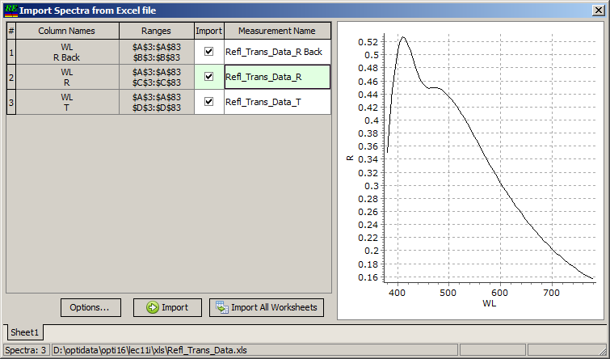
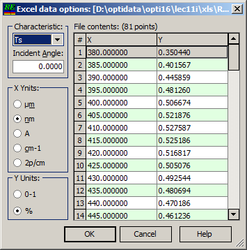

Import Spectra from Excel
The Import Spectra from Excel command first opens a File Open dialog, prompting you to select the corresponding MS Excel file containing the measurement data.
You can also use a drag-and-drop operation, designating the Measurements database as a drop target, similar to the Import Multiple Files option.

OptiChar performs a smart scan of the Excel file layout and represents all extracted data in the Import Spectra from Excel window.
At the bottom, all worksheets are listed and can be changed using tabs similar to an Excel file. Each extracted spectrum is represented in the list on the left, specifying the column name, cell range, and future measurement file name.
The names can be adjusted if necessary by editing the cells in the Measurement Name column. The Import column allows you to deselect certain spectra, excluding them from the import operation.
It is important to use the Options dialog in order to set the correct types of spectra, incidence angle, and X- and Y-axis units.

This dialog is quite similar to the XY-data options dialog, but it affects the import transformation of data in the Excel import case.
The Import button allows importing spectra presented in the currently selected worksheet to the Measurements database.
The Import All Worksheets button imports all selected spectra into the Measurements database.